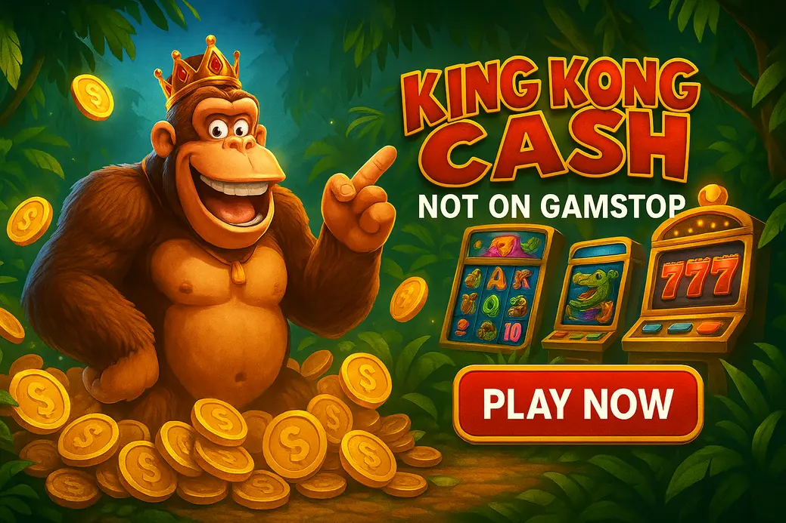

King Kong Cash Not On GamStop

Last Updated: 6 October 2026 | Verified by iGaming experts
King Kong Cash not on GamStop is for UK slot players who want the giant-ape bonus-chase without using UKGC casinos tied to the national self-exclusion scheme. The short version: compare the casino first, then the slot. A shiny bonus means bollocks if withdrawals drag or the game lobby is a mess.
King Kong Cash plays in the same punchy lane as jungle-style money-collect slots: bold symbols, high-energy bonus teases, and a proper “one more spin” rhythm. If you like Big Bass Bonanza, Gorilla Mayhem, or Mighty Kong, this is the kind of slot you will understand in seconds.
Best Casinos to Play King Kong Cash Not on GamStop
- Clean casino lobby with fast slot search
- Sportsbook included if you split your balance
- Trade-off: bonus terms can feel dense on mobile
- The search bar actually works for provider and title checks
- Bitcoin withdrawal landed in 6 hours in a real cashier test
- Trade-off: KYC checks can still land before cashout
- Good for quick slot browsing without twenty pop-ups
- Debit card and crypto options usually sit in the cashier
- Trade-off: fewer advanced filters than bigger brands
- Works well for players who want slots and match betting together
- Mobile menus are tidy after the first login
- Trade-off: bonus caps need reading before high-stake play
- Strong for players comparing slots from multiple studios
- Live chat is easy to find from the account area
- Trade-off: the interface is busy until you learn the layout
The best King Kong Cash casinos not on GamStop are the ones that make the slot easy to find, explain bonus rules clearly, and pay without drama. Before depositing, type “King Kong Cash” into the casino search bar. If it shows the game, open the info panel and check RTP, max win, bet range and bonus rules.
Honestly, that 30-second check saves hassle. Some non GamStop casinos King Kong Cash players use have huge lobbies, but the exact slot version can differ by supplier, region and account settings.
What Does Not On GamStop Mean?
“Not on GamStop” means the casino is not connected to the UK’s GamStop self-exclusion database. These sites usually operate under offshore licences rather than a UK Gambling Commission licence. That matters because player protections, dispute routes and affordability checks are different.
For UK players, the appeal is clear: more bonus variety, crypto payments, larger game libraries and fewer account friction points. The trade-off is equally clear: you need to do more checking yourself. Look for licence details, responsible gambling tools, game providers, withdrawal limits and support quality before you put real money in.
Quick reality check: if you are self-excluded through GamStop because gambling became harmful, do not use non-GamStop casinos to bypass that block. That is not clever; it is a red flag.
King Kong Cash Overview
King Kong Cash is a jungle-themed online slot built around big visual energy: giant ape branding, bold reels, cash-style symbols and bonus anticipation. It suits players who like games that feel louder than classic fruit machines but less complicated than Megaways monsters.
The closest comparisons are slots like Gorilla Mayhem from Blueprint Gaming, Mighty Kong by Eyecon, and Big Bass Bonanza by Pragmatic Play. King Kong Cash has the same “waiting for the feature to land” tension, but the ape theme gives it a chunkier, more cinematic feel. The weakness? Base-game dry spells can feel damn long if you chase features on stakes above your comfort zone.
King Kong Cash RTP, Volatility and Game Information
The King Kong Cash RTP is commonly listed in the mid-95% to 96% band depending on the casino configuration. Always open the game info screen because operators can host adjusted RTP versions. A 96% version returns £96 per £100 staked over a very long sample, not during your Thursday night session with a tenner and bad luck.
Volatility sits on the higher side. That means fewer steady small wins and more pressure on bonus rounds or clustered cash hits. Compared with Starburst, it feels harsher. Compared with Dead or Alive 2, it is less brutal, but it still has teeth.
| Game Detail | What to Check | Player Takeaway |
|---|---|---|
| RTP | Mid-95% to 96% versions appear in casino info panels | Pick the highest listed version when available |
| Volatility | Medium-high to high | Use smaller stakes than you would on low-variance slots |
| Bet Range | Casino-specific | Start low; the spin button is a menace on mobile |
| Bonus Style | Free spins or cash-collect style features | Do not judge the game from ten spins |
King Kong Cash Gameplay and Main Features
Gameplay is quick to understand: set your stake, spin the reels, watch for matching symbols and feature triggers. The rhythm is what sells it. You get that chunky, animated online slot feel where every near-miss looks bigger than it is. By the way, turn sound down if you are playing in public; jungle slots love dramatic thuds.
The King Kong Cash slot not on GamStop works best when you treat it like a bonus-hunt game rather than a slow balance-builder. The base game can pay, but the real excitement is in the feature potential.
King Kong Cash Symbols and Winning Features
Expect themed high-value symbols tied to the King Kong setting, alongside lower-value card symbols that keep the reels moving. Wilds are the symbol to watch because they can complete awkward lines and turn a weak-looking spin into a proper hit.
The useful detail is in the paytable: check whether wins pay left to right only, both ways, or through a cluster mechanic. That single rule changes how “live” each spin feels. Gorilla Mayhem, for example, leans heavily into multiplier power; King Kong Cash is more about symbol connections and bonus pressure.
Bonus Features and Free Spins
Bonus features are the main reason players search for King Kong Cash casinos not on GamStop. Free spins give the game its biggest swings, especially when extra wilds, collectors, multipliers or cash values come into play.
If a casino offers bonus buys, check the cost against your bankroll. A £40 buy on a £50 balance is not strategy; it is self-sabotage wearing a party hat. Also read whether bonus funds can trigger all features, because some casinos restrict jackpot, buy-feature or enhanced-spin modes when you play with promotional money.
Mobile Experience and Gameplay Performance
King Kong Cash plays well on modern mobile browsers, especially on Chrome and Safari. Portrait mode is the natural fit. The reels stay readable, the stake selector is close to the thumb, and the spin button sits exactly where impatient players keep tapping it.
On 4G, animations can stutter during heavier feature intros, but the actual game result is server-side. Wi-Fi gives smoother bonus reveals. If the slot opens in a tiny frame, rotate once, then return to portrait; that often resets the canvas properly.
Why Play King Kong Cash at Non-GamStop Casinos?
The main reason is access. Non-GamStop casinos often host broader slot libraries, including games and versions that are less visible at UKGC sites. You also get more varied bonuses, crypto banking, higher deposit ceilings and fewer interruptions during registration.
The comparison angle is important. If you play King Kong Cash beside Big Bass Bonanza, Wolf Gold and Gorilla Mayhem in one lobby, you can move between volatility styles without opening three accounts. The weakness is oversight. UKGC casinos have tighter complaint channels. Offshore sites require sharper judgment from you.
Bonuses Available at Non-GamStop King Kong Cash Casinos
Bonuses can make King Kong Cash more entertaining, but they can also make withdrawals annoying. Look for slot-friendly wagering, real contribution rates and max bet limits. A 200% bonus with 50x wagering is not automatically better than a 100% bonus with cleaner terms.
Common offers include welcome matched deposits, free spins, reload bonuses, cashback and crypto promos. The concrete bit: if the max bonus bet is £5 and you accidentally spin £6, some casinos can void winnings. That is painful and completely avoidable.
Bonus check before playing: confirm King Kong Cash contributes 100% to wagering, check max bet, check excluded games, and screenshot the terms before your first real-money spin.
Payment Methods and Withdrawal Options
Non-GamStop casinos usually give more cashier choice than standard UK sites. The exact list depends on the operator, but these are the options UK players see most often:
- 💳 Debit Card — familiar and simple, but withdrawals can take longer.
- ₿ Bitcoin — fast when the casino approves quickly; network fees vary.
- Ξ Ethereum — useful for crypto players, though gas fees bite during busy periods.
- 💸 Tether — stable value, clean for bankroll tracking.
- 🏦 Bank Transfer — solid for larger withdrawals, but slower than crypto.
- 📱 E-wallets — convenient where supported, though UK availability changes.
Withdrawal speed is where casinos show their true colours. A site can accept deposits in ten seconds and still take 48 hours to approve cashouts. Check pending periods, daily limits and whether KYC is requested before or after your first withdrawal.
Security, Licensing and Responsible Gambling
A safe non-GamStop casino should show licensing details in the footer, use encrypted payments, publish bonus terms clearly and offer account tools such as deposit limits, time-outs and self-exclusion. If support dodges basic questions about withdrawals, walk away.
Do not confuse “not on GamStop” with “no rules”. Proper offshore casinos still run age checks, anti-fraud monitoring and source-of-funds reviews when triggered. The weakness is consistency: one operator handles disputes professionally, another replies with copy-paste nonsense. That is why casino choice matters more than the slot itself.
How to Choose a Reliable Non-GamStop Casino for King Kong Cash
Start with the boring checks. They are boring because they work. Search for King Kong Cash in the lobby, open the game, read the info panel, then inspect the cashier before depositing. A good site lets you find all of that without begging live chat.
Use this quick filter:
- Game access: King Kong Cash appears in search and loads without VPN nonsense.
- Clear RTP: the game info panel shows the hosted version.
- Fair withdrawals: limits and KYC rules are visible before deposit.
- Bonus sanity: wagering, max bet and excluded games are easy to read.
- Support test: ask one direct question and see if the answer is useful.
Common Mistakes:
- Depositing before checking whether King Kong Cash is actually in the lobby.
- Taking the biggest bonus, then breaking the max bet rule on the first feature chase.
- Playing high volatility stakes because the first 20 spins looked “quiet”. That is how balances get chewed.
Pros and Cons of Playing King Kong Cash Not on GamStop
There are good reasons to play King Kong Cash outside GamStop casinos, but it is not a free lunch. You gain flexibility and lose some UK-specific protection. Keep both sides in your head.
Pros
- Bigger choice of casino bonuses and reload offers.
- More payment options, especially Bitcoin and Tether.
- Broader slot lobbies for comparing similar games in one account.
- Fewer registration interruptions at many offshore sites.
Player note
For comparison fans, this is handy. You can jump from King Kong Cash to Big Bass Bonanza or Gorilla Mayhem and feel the volatility difference quickly.
Cons
- No UKGC protection if a dispute gets messy.
- Bonus rules can be stricter than the banner suggests.
- Withdrawal checks can arrive after you win, not before.
- High volatility slots can punish oversized stakes.
Honest trade-off
If you need hard limits and strong external blocks, non-GamStop play is the wrong direction. Use safer gambling tools first.
How to Play King Kong Cash: Practical Tips
Start lower than your ego wants. If your session bankroll is £50, 20p or 40p spins give you breathing room. £2 spins turn the game into a coin toss with jungle noises. Honestly, that is not entertainment for most players.
- Check RTP in the game menu before playing real money.
- Set a win target and a loss limit before the first spin.
- Avoid bonus buys unless your balance can handle several misses.
- Use autoplay only with hard stop-loss settings.
- Switch slots if you start rage-spinning. King Kong does not care that you are “due”.
Compared with Book of Dead, King Kong Cash feels less about waiting for one expanding symbol and more about feature momentum. Compared with Starburst, it is far swingier. Match your stake to that swing.
Similar Slots to King Kong Cash
If King Kong Cash is your kind of chaos, these slots sit in the same neighbourhood. Each has a weakness, because every slot does.
- Gorilla Mayhem — Blueprint Gaming: huge multiplier potential and a wild jungle feel. Weakness: brutal dead patches before the bonus.
- Mighty Kong — Eyecon: strong ape theme and easy rules. Weakness: older presentation beside newer cinematic slots.
- Big Bass Bonanza — Pragmatic Play: simple collector mechanic and famous free spins. Weakness: base game can feel repetitive fast.
- Wolf Gold — Pragmatic Play: jackpot-style extras and familiar pacing. Weakness: not as visually exciting as modern releases.
- Book of Dead — Play’n GO: iconic high-volatility bonus hunting. Weakness: the expanding symbol can absolutely blank you.
The best comparison is Gorilla Mayhem if you want the same animal-power vibe. Big Bass is better if you prefer clear collect mechanics. King Kong Cash lands between them: bold theme, direct gameplay and enough bonus tension to keep sessions lively.
FAQ
Is King Kong Cash available at casinos not on GamStop?
Yes, King Kong Cash can be found at selected casinos not on GamStop. Search the lobby before depositing, then open the game info panel to confirm the exact version, RTP and provider details.
Can UK players legally play King Kong Cash at non-GamStop casinos?
Yes, UK players are not committing a crime by playing at offshore casinos that accept them. The practical tip is to remember these sites are not UKGC-licensed, so complaints and protections work differently.
What is the RTP of King Kong Cash?
The RTP is commonly shown in the mid-95% to 96% range depending on the casino version. Always check the in-game paytable because operator settings can change the number.
Is King Kong Cash a high volatility slot?
Yes, it plays like a medium-high to high volatility slot. Keep stakes modest, because dry base-game runs are part of the deal rather than a sign the game is broken.
Can I play King Kong Cash on mobile?
Yes, King Kong Cash works on mobile browsers at compatible casinos. Use portrait mode, keep your thumb away from rapid-spin habits, and choose Wi-Fi for smoother feature animations.
What payment methods are available at non-GamStop casinos?
Common methods include debit cards, bank transfers, Bitcoin, Ethereum, Tether and selected e-wallets. Check withdrawal limits first, because deposit speed means nothing if cashout rules are poor.
Are non-GamStop bonuses better for King Kong Cash players?
They can be larger, but not always better. Read wagering, max bet, game contribution and withdrawal caps before playing King Kong Cash with bonus funds.
How do I find a safe casino to play King Kong Cash?
Choose a casino with visible licensing, clear cashier rules, working support and responsible gambling tools. Then test the lobby search and terms before making a deposit.
Final Thoughts on King Kong Cash Not On GamStop
King Kong Cash not on GamStop is a strong pick for UK players who like bold jungle slots, bonus tension and the freedom of offshore casino lobbies. It is not the softest game, and non-GamStop casinos demand extra care, but the experience can be cracking when you choose the right site and keep your bankroll under control.
The smart move is simple: verify the slot, read the bonus terms, use sensible stakes and cash out without getting greedy. King Kong Cash is entertainment, not a plan for rent money. Treat it that way and the big ape is far more fun.
Useful Resources
Safer Gambling: Only play if you are 18+ and never gamble with money you cannot afford to lose. If gambling stops being fun, use blocking tools and get support.
BeGambleAware GamCare UKGC GamStop